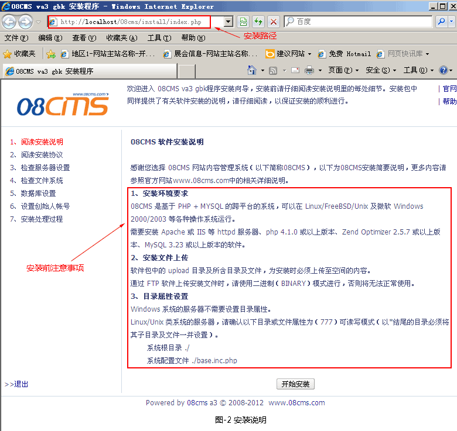
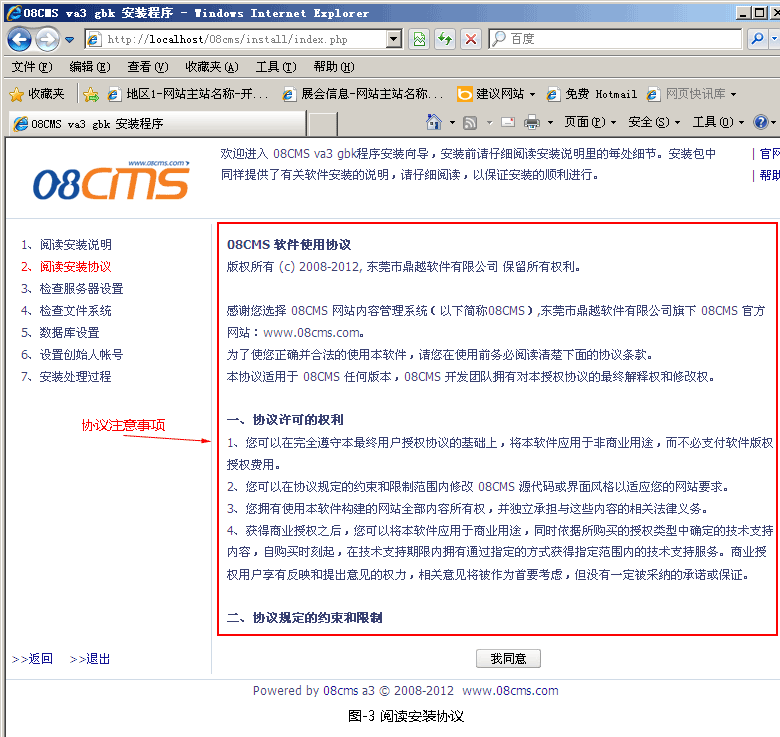
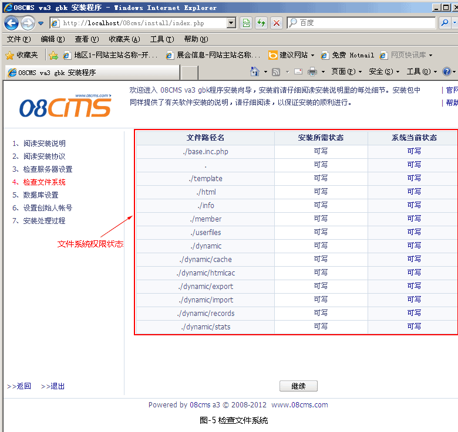
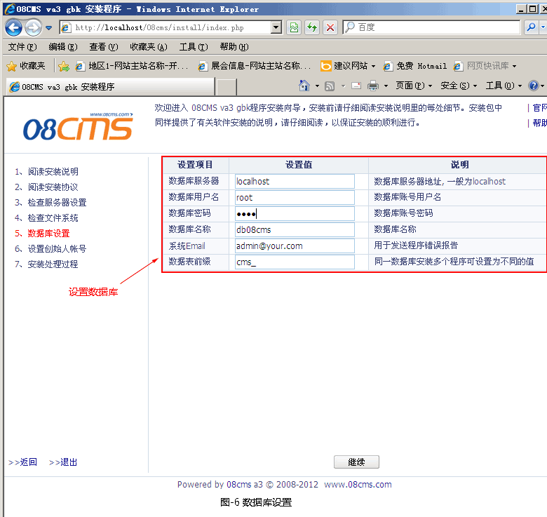
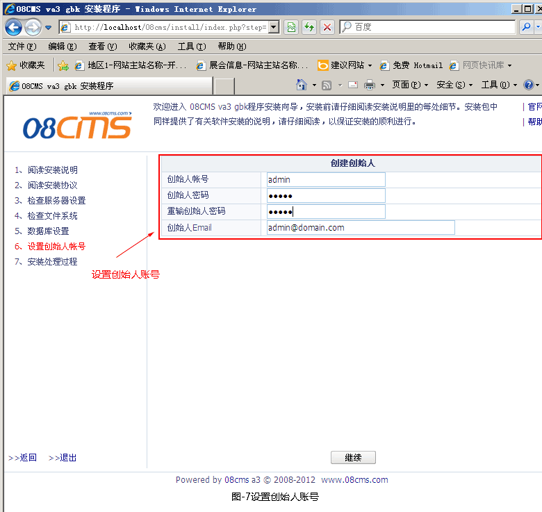
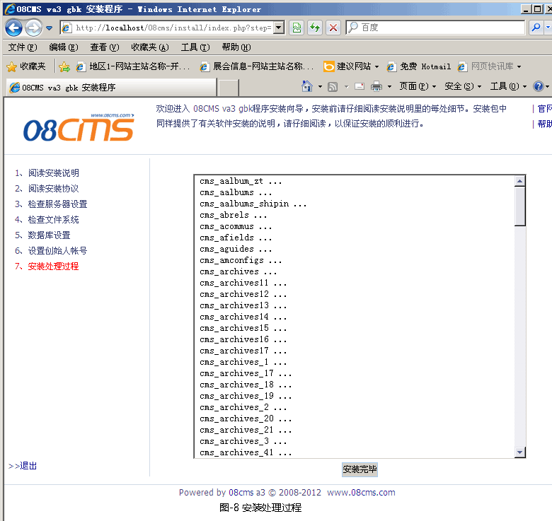
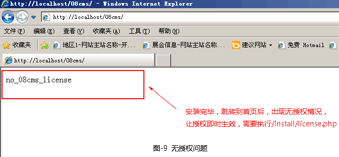
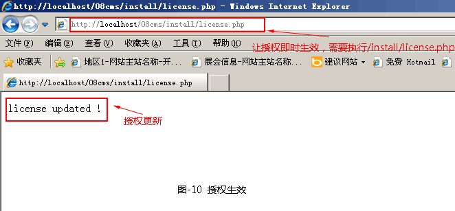
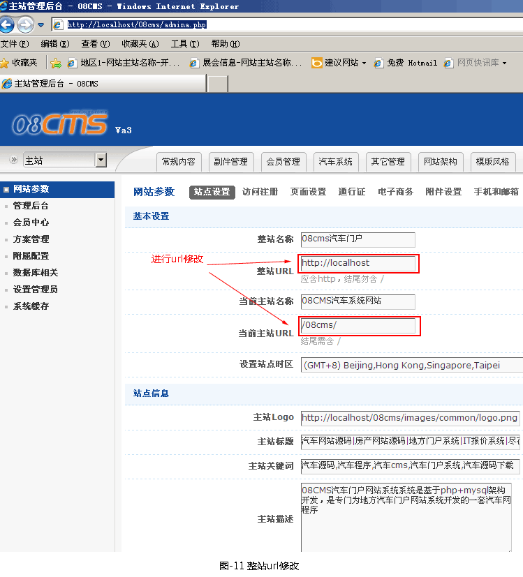

进入08cms汽车门户系统安装界面，阅读用户使用条款，如图2所示。

在安装之前，认真阅读安装说明，确保系统有必要的安装环境。
2.下一步阅读安装协议，如图3所示。

3.下一步检查服务器设置，如图4所示。

4.下一步检查文件系统，如图5所示。

5.下一步数据库设置，如图6所示。

6.下一步设置创始人帐号，如图7所示。

7.下一步安装处理过程，如图8所示。

安装完毕后，自动跳转到网站首页，商业版或高级版会出现无授权状态，如图9所示。

让授权即时生效，需要执行http://网站授权域名(本地可用localhost/安装目录/)/install/license.php ，如图10所示。 
在浏览器中运行http://localhost/安装目录/index.php，就可进入首页，
在浏览器中运行http://localhost/安装目录/admina.php,进入后台管理
三、非安装(复制型)系统注意事项
1、如果启用了扩展缓存，打开base.inc.php，关闭相关的扩展缓存（如：$ex_memcache_server = '';值置空）。
2、打开dynamic/cache/mconfigs.cac.php，将hosturl修改为正确的值。
3、登录管理后台，进入网站参数-站点设置，在 "整站URL值" 为正确的情况下，提交，如图11所示。

4、如果启用了扩展缓存，打开base.inc.php，修改$excache_prefix与原值有所不同，再开启相关的扩展缓存。